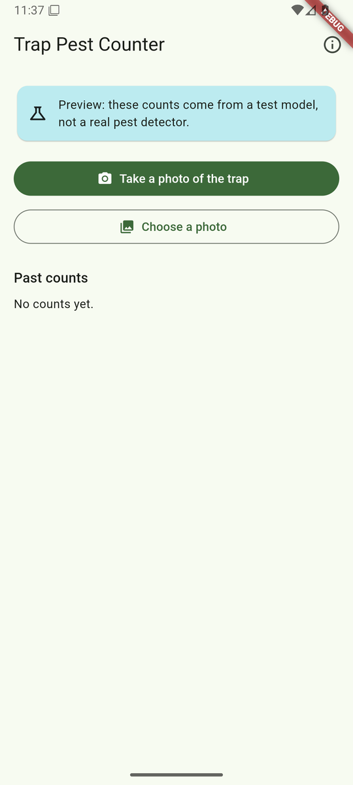
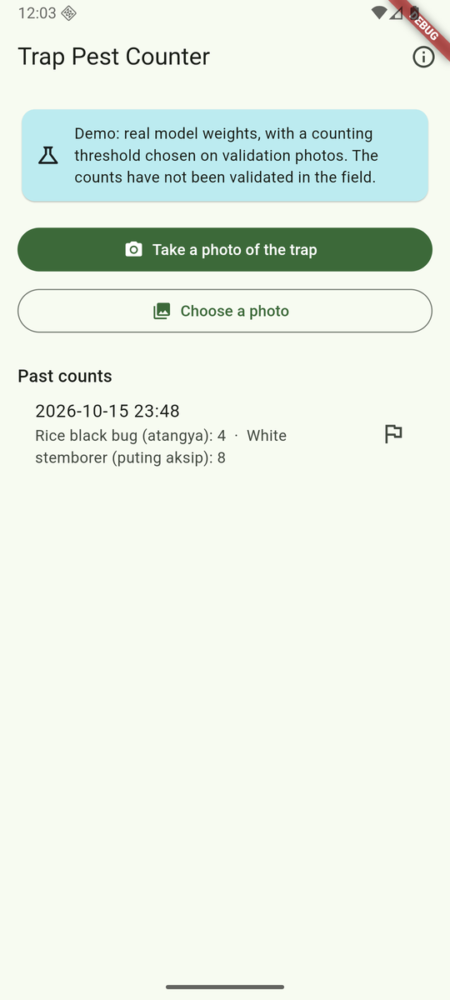

Coding with AI Agents · case study
Building the demo app
with an agent
How an AI coding agent, directed by one person, planned, built, tested and documented an on-device rice-pest counter for Android in two days, then extended it to three models. A teaching demonstration, not a tool for farmers.
It started with one question
“if we were to build this rice pest detector app, what's your recommended tech stack”Prompt 1 · the project owner
First answer
Python + ONNX Runtime on CPU, an offline-first local web app (FastAPI + server-rendered pages), SQLite, Docker or a Windows bundle.
The catch it named
The stack depends on who uses it and where. Field staff on laptops, a central lab and farmers on phones each need a different app.
Section 01
Plan before code
Plan mode · one multiple-choice question at a time
The owner made every product call
| Decision | Choice | Why it mattered |
|---|---|---|
| Users | Farmers on phones | On-device model, Android first |
| Scope | MVP while the model is fixed | Build against a fake detector now |
| Output | Counts + refer to expert | No spray or treatment advice |
| Framework | Flutter | One codebase, iOS later |
| Languages | Filipino, English, regional | gen-l10n string files |
| Photos | On-device only | No server, simplest for privacy law |
| Code location | Inside rice-pest-detector | Model and app versioned together |
These were the first brief (15 Oct). The project is now a teaching demo: not made for farmers, not official, not validated in the field.
What the plan had to respect
The model was not ready, and the plan said so
detections at the 0.5 threshold in training run r18-1
sex classes below 0.70 mAP50, so the app reports species only
of scope: phone photos and decisions without expert review (model card)
release gates before any real use of the counts
So the MVP was built on a fake detector and a tiny test model behind a preview notice. With no real model installed, the app now says so and does not count.
Approved plan · each step tested before the next
Nine build steps
Reuse, not rewrite: the Python inference contract, the existing Python tool's counting rules and test fixtures, and its pinned model download.
Section 02
Build it, test-first
Tech stack
From open data to a phone
App architecture
Screens talk to interfaces, so tests can use fakes
Screens
Services
Detector pipeline
Model chosen at start-up
In tests
Prompt: “Install Flutter + Android SDK”
Setting up the toolchain, with checks and consent
- Flutter cloned from the official repository into a folder without spaces: Flutter breaks on paths with spaces. Analytics switched off.
- Android command-line tools downloaded, then checked against Google's published SHA-256 before extracting.
- The SDK licences were accepted only after an explicit yes from the owner (“Yes, accept and install”).
- An Android 36 emulator: x86_64, Windows hardware acceleration (WHPX).
- Python ONNX tools came from the repo's own
exportextra, already planned for the model's export step.
Steps 2–3
The phone must see exactly what Python sees
- A Python tool writes golden fixtures from the reference code: EXIF cases, resizes, post-processing.
- No photos are stored. Test images are patterns that Dart rebuilds from the same formula.
- Dart resizes the pattern and compares the result byte for byte (SHA-256) with Python's.
- Shapes include real phone photos: 4032×3024 in both orientations.
Lesson · don't guess, read the source
Byte-exact on every shape but one
Symptom
One pixel in a 3×1200 test image was off by one level.
Investigation
A first guess at Pillow's rule was wrong on 26 probed shapes. Reading Pillow 12.3's C source settled it: only inputs under ~10 px wide differ.
Decision
No camera takes a 3-pixel-wide photo, so the app rejects photos under 32 px instead of chasing the edge case.
Result: byte-identical on all 8 fixture shapes, from 37×23 up to 4032×3024.
Lesson · tests catch library surprises
A photo that would have been rotated twice
What the test found
The image package already applies a JPEG's EXIF rotation, then clears the tag. Our contract would have applied it again.
The fix
Decode returns the photo upright; the contract then runs with orientation 1. A test checks all 8 EXIF orientations against Pillow's behaviour.
The same test run also caught a bug in the test itself: ColorUint8(77) makes a 77-channel colour, not grey 77.
Step 4 · prompts: “Status check”, “Ok”
ONNX on the emulator, and a 40-minute hang
Test model
A 9.9 KB ONNX file with the real input and output names. It returned known golden outputs, so the device result could be checked exactly.
The hang
The app installed and launched, but no Dart output ever appeared. The likely cause: Flutter's Impeller renderer on a headless, software-rendered emulator.
The fix
Run device tests through flutter drive --no-enable-impeller. All 3 device tests pass, including the 0.5-boundary detection.
Steps 6–8 · prompt: “Continue to working app”
Screens, languages, history
- Home, Result and About screens. Every result offers “Share the counts”.
- English and Filipino. A test fails if any string suggests spraying or a treatment.
- History is one JSON file on the phone, written safely, and recovers from corruption.
- A model download pinned to a SHA-256, or a copy from USB or LAN. With no model installed, the app says so and does not count.

Section 03
Put the real model in
“can we run real model weights on this demo app? also preload photos from the data source”Prompt · the project owner
the highest score the model gives any of 253 validation photos
epochs with validation count accuracy stuck at the do-nothing baseline (0.474)
test species mAP50: it ranks insects well, it just isn't confident
Diagnosis at the time: a calibration problem, not a bad checkpoint (slide 19 has the root cause). That is why nothing ever passed the 0.5 threshold.
Lesson · find the first stage that disagrees
An export that only worked on one input
- First export: 0 of 300 output rows matched PyTorch.
- Comparing stage by stage showed the graph had frozen values from the input used to trace it.
- Fix: export inside
eval()+no_grad(). A regression test, checked by breaking it deliberately, guards this. - Parity also reports how many detections it compared, so it cannot pass on nothing.
Parity on real photos
First export (run r18-1), 10 validation photos, threshold 0.04. The current model, r50-v5: 145 detections at 0.48, max difference 4.9e-6, 171.7 MB.
| Detections compared | 126 |
| Max score difference | 3.5e-7 |
| Min box overlap (IoU) | 0.99999 |
| ONNX size | 80.75 MB |
Prompt choice: “Pick on validation split”
A demo threshold, chosen on validation photos only
| Threshold | Count accuracy | Count error (both species) | Detections kept |
|---|---|---|---|
| 0.04 (chosen) | 0.632 | 3.83 | 3,019 |
| 0.10 | 0.482 | 9.11 | 625 |
| 0.50 (specified) | 0.474 = baseline | 11.51 | 0 |
The threshold choice never touched the test split. Stemborers are overcounted and black bugs undercounted. This is a demo setting, not a fix. Calibration (16 Oct) did not reach the count gate either. A larger model (r50-1) reached 0.751, still below 0.80. The root cause was a bug in the training library; retrained with the fix (r50-v5, 17 Oct), the model scores normally, its threshold moves to 0.48, and validation count accuracy reaches 0.834. The app's demo now uses r50-v5; on its one test look (18 Oct, 252 photos) it counts 0.849 at 0.48. The training deck has the details.
Demo mode
Real weights on the emulator
- The weights were copied to the emulator and checked against the recorded checkpoint hash.
- The demo model lives in app storage, and loads only if its SHA-256 and size match.
- 20 validation photos pushed to the gallery, with their true counts for comparison.
- Its own notice: “counts have not been validated in the field”.

17–18 Oct · prompt: “…an option to switch models on the app”
Three models, one app
Download from Kaggle
Settings lists the three published models from a catalogue bundled with the app. Each download is pinned by size and SHA-256. The home screen offers r50-v5, the default.
Checked before use
An imported model file loads only if its size, SHA-256, input and output shapes and a self-test all pass.
Settings travel with the model
Input size, threshold and review flag: r50-v5 640 px, 0.48, 0.64; RF-DETR-M 576 px, 0.48, 0.63; D-FINE-L 640 px, 0.50, 0.68.
Switch and compare
Pick the active model, or run two on the same photo side by side. On one emulator photo: r50-v5 counted 9 black bugs and 1 stemborer in 1.3 s; RF-DETR-M counted 11 and 0, with a review flag, in 0.7 s.
Not validated, every model
Every model, the default included, carries a “Not validated” tag: none has been checked in the field or by experts.
A demo app, in words too
The app and its documents say “demo app”. A test fails if any English or Filipino string mentions farmers or technicians.
Section 04
Document it honestly
Prompts: “write full documentation…”, “add AI Use Disclosure…”
README, notice, disclosure, rename
README
Two Mermaid architecture diagrams, status first, the full pipeline, run instructions. Test counts were re-run before they were written down.
Notice + disclosure
A standard safety notice, extended to the app. An AI Use Disclosure says what the agent did and what people did.
Behind the scenes · prompts used (1/3)
Short prompts, multiple-choice answers
| # | Owner's prompt or choice | What it triggered |
|---|---|---|
| 1 | “if we were to build this rice pest detector app, what's your recommended tech stack” | Stack recommendation |
| 2 | “whats' this skill” → /plan | Explained plan mode |
| 3 | Plan the detector app · Farmers on phones · MVP while model is fixed | Plan scope |
| 4 | Counts + refer to expert · Flutter · Filipino, English, regional | Product rules |
| 5 | On-device only · Inside rice-pest-detector | Privacy, repo |
| 6 | “Install Flutter + Android SDK” · “Yes, accept and install” | Toolchain, licence consent |
| 7 | flutter_onnxruntime · “Continue to working app” | Steps 4–9 |
Behind the scenes · prompts used (2/3)
From “we good?” to a real model
| # | Owner's prompt or choice | What it triggered |
|---|---|---|
| 8 | “Status check” · “Ok” · “we good?” | Hang diagnosis, retry |
| 9 | “how do i run it” · “let's do Option B” | Emulator with a window |
| 10 | “can we run real model weights on this demo app? also preload photos from the data source” | Export, demo mode |
| 11 | I'll copy it now · Pick on validation split · “end emulator run” | Threshold sweep |
| 12 | “write full documentation includin architecture diagram in … README.md” | README |
| 13 | “… add AI Use Disclosure section and a safety notice” | Notice, disclosure |
| 14 | “expand the notice to cover the app … and reinstall…” | Rename, reinstall |
Behind the scenes · prompts used (3/3)
From one model to three
| # | Owner's prompt or choice | What it triggered |
|---|---|---|
| 15 | “im thinking for demo purposes we could have an option to switch models on the app…” | Model registry, import checks, Compare |
| 16 | “…can we host these in kaggle?” | Weights published on Kaggle |
| 17 | “in settings can we add an option to download the other three…” | Download list in Settings |
| 18 | “none of these models are field validated or validated by experts, we keep the tag” | “Not validated” on every model |
| 19 | “Drop the farmers…” | Demo-app wording, renamed files |
| 20 | “is there a script to run the emulator” | tools/run_emulator.ps1 and .sh |
Behind the scenes · how the agent worked
Skills, modes and agent tools
Plan mode /plan
Read-only research, a written plan, then approval before any code.
Explore sub-agent
Mapped the reusable code, contract and licences, without cluttering the main session.
Multiple-choice decisions
Every fork went to the owner as options with a recommendation.
Test-driven development
Superpowers TDD: watch each test fail, then pass. Where code came first, a deliberate break proved the tests catch it.
Agent tools
PowerShell, Bash, file read/write/edit, search, web fetch (pub.dev, Pillow source, Android downloads), background tasks.
Behind the scenes · exact versions
Tools and versions used
| Layer | Tool | Version / note |
|---|---|---|
| App | Flutter · Dart | 3.47.7 · 3.13.5 |
| On-device inference | flutter_onnxruntime → ONNX Runtime | 1.9.0 → 1.28 |
| Android | SDK platform · emulator · JDK | 36 · WHPX · 21 |
| App packages | image · image_picker · share_plus · path_provider · http · crypto | image 4.12 · share_plus 13 |
| Training and export | PyTorch · transformers | 2.14.1 (CPU) · 5.20.1 (4.57.6 for the first two runs) |
| Reference and ONNX | Pillow · onnx · onnxruntime | 12.3.0 · 1.23.2 · 1.31.0 |
| Everything else | git · adb · pytest · Colab · Kaggle CLI | weights published on Kaggle (18 Oct) |
Behind the scenes · proof, not promises
Every claim has a test behind it
Python tests: data, metrics, training loop, notebook build, fixtures, export, parity, threshold, calibration
Dart tests on the PC: contract, decoding, counting, history, model store and registry, import and download checks, strings, screens
device test: the real app starting with no model installed
- Generated files have
--checkmodes, and line endings are pinned, so Windows checkouts stay reproducible. - Deliberate breaks proved three key tests can fail: model install verification, threshold tie-break, export inference mode.
Current version
Works end to end. Not validated for real use.
| Release gate | Status |
|---|---|
| Model passes the quality gates with a validation-chosen threshold | met on test (18 Oct): r50-v5 count accuracy 0.849 at 0.48 |
| Field validation on phone photos taken in the field | not started |
| Weights | published on Kaggle (18 Oct) as a teaching demo |
| Wording review: the English text and the Filipino draft, so nothing reads as agronomic advice | pending |
| Data protection: the privacy notice and consent for any photos collected | pending |
| Phone latency: a target per photo on a low-end phone | not set |
| ONNX export and app built and running; parity met on a 10-photo validation sample | done |
For workshop participants
What to take from this
- You make the calls. The agent offered options with a recommendation; the owner decided users, scope, wording and risk.
- Spec and plan first. The model's limits were in the plan before any code was written.
- Tests are the stop condition. Golden fixtures turned “looks right” into “matches byte for byte”.
- Bugs hide in libraries and tooling: Pillow's pass order, EXIF handling, the Impeller hang, the export trace.
- Say what isn't done. Preview and demo notices, release gates, an AI Use Disclosure.
Repository: rice-pest-detector · README.md has the full write-up